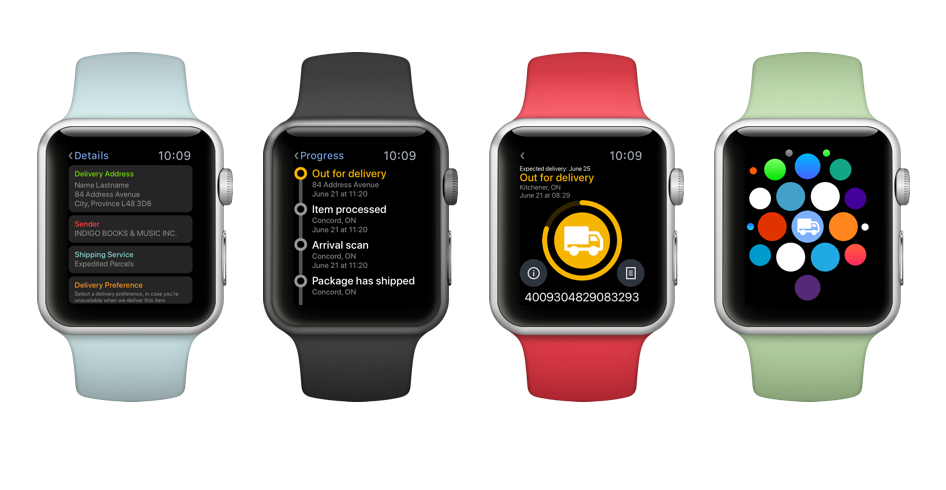
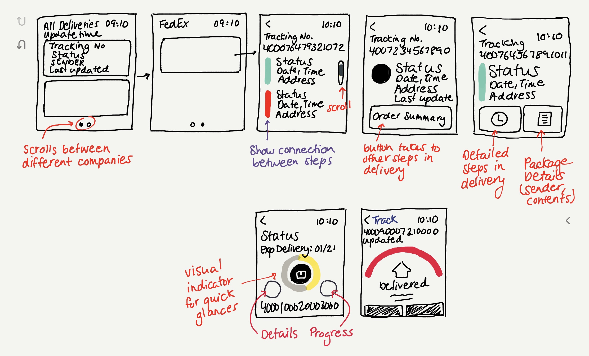
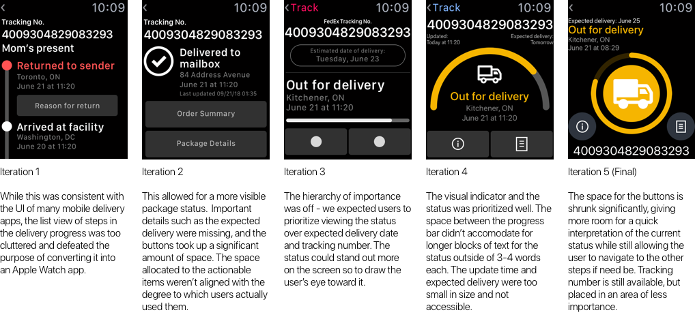
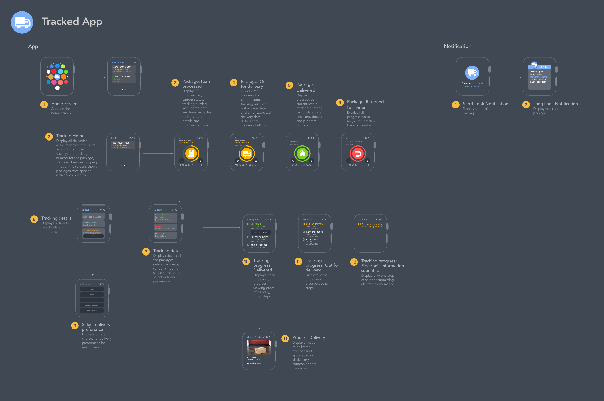

Tracked is the perfect complement to the 21st century's e-commerce burst, removing the difficulties when it comes to tracking multiple packages from multiple delivery companies arriving at all different dates.
The Problem
These days, online shopping redefined the ways in which consumers shop and the way retailers choose to sell. The rise of ecommerce giants like Amazon have introduced the world to a whole new means of purchasing outside the brick and mortar stores we've grown accustomed to. Who can turn down viewing the exact same products in the comfort of the your home over getting in your car and driving to the store? Or having items delivered to your front door within days, free? Nearly all these orders offer options to track the package you're ordering, keeping the user updated on the status of their shipment. This means multiple packages from multiple different companies and stores.
Currently, the main option for users to check on their orders is through the tracking link in the original shipping email. But what happens if you are expecting multiple orders, from multiple companies? The email becomes cluttered, extending the time to search and navigate through the email, creating a time consuming and annoying user journey.
Proposed Solution
Users on the go who wish the view the status of their package can now turn to their wrists and use Tracked, a one stop shop for all their upcoming orders. It compiles the orders coming from any delivery company, such as FedEx, Canada Post, UPS, DHL, and more in one convenient, accessible area. It presents them with the essentials on each package they'll need at-a-glance, such as the tracking number, expected delivery date, the sender, etc.
Designing for the Apple Watch
The introduction of wearbles completely changed the design industry. At its core, it centered on efficiency and frictionless usage with a reduced screen size. As I worked on this project, I learned how to strip away the complexities I was used to with mobile design and focus on an experience that demanded a quick, convenient user experience. Here are some of the things I learned designing for my first wearable.
Quick motions: The Apple Watch redefined the functionality of watches. One thing remained constant however, users won't be too pleased tapping around on their watch for more than 4-5 seconds at a time - it simply isn't in the average user's mental model of a watch. Users won't be too pleased about spending 10 minutes on your app, trying to get something done. They've got their phone for that.
Essentials only: The first thing they'll tell you when you start reading up on how to design for the Apple Watch is optimizing the information you put on each screen. The space you're given is about a third of the average phone screen, which means taking out the fluff and keeping the must-know information on the screen only. It was difficult at first - I decided to do some data mapping based on what information is available for each order, then filtering it down to gauge only the information absolutely necessary to be seen for each order.
Below is a feature I made based off the research I compiled from existing delivery-tracking apps Canada Post, UPS, FedEx, and DHL. To prioritize what should be placed on the Apple watch, I highlighted the most important information associated with tracking a package.

Rough Sketches
Based off the information I wanted to include in the application, I sketched out the main screen, delivery details and status screens of Tracked.

I found the package details screen to be the most difficult to create. I prioritized making the app easily viewable from the wrist, so the current status should be the most visible part while the rest of the steps should still be seen by the user. After a few sketches, the final design includes the current status filling the screen of the watch, and a separate button for the user to few steps of the shipment if they wish.
This way, users looking to get a quick refresh or update about their delivery will be informed immediately over scanning through lots of information to get there, but can still access additional information at their control. Lastly, I incorporated a visual progress indicator as they provide a more accessible user experience and an overall more aesthetic application.

Workflow Mapping
